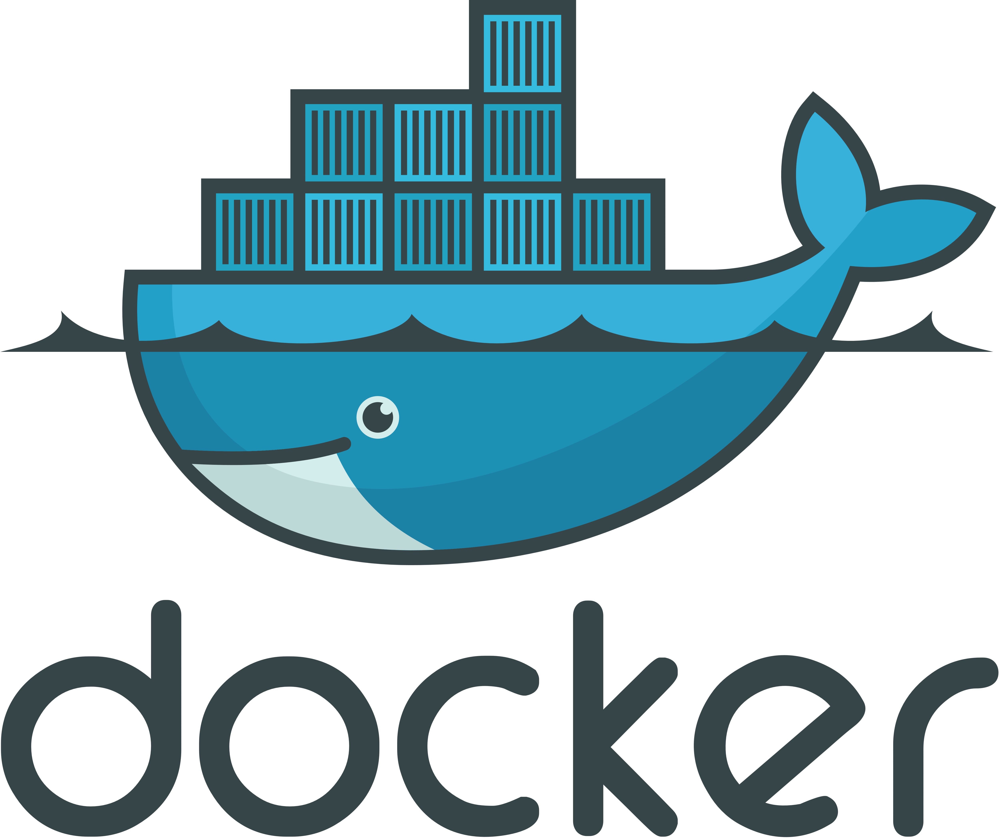
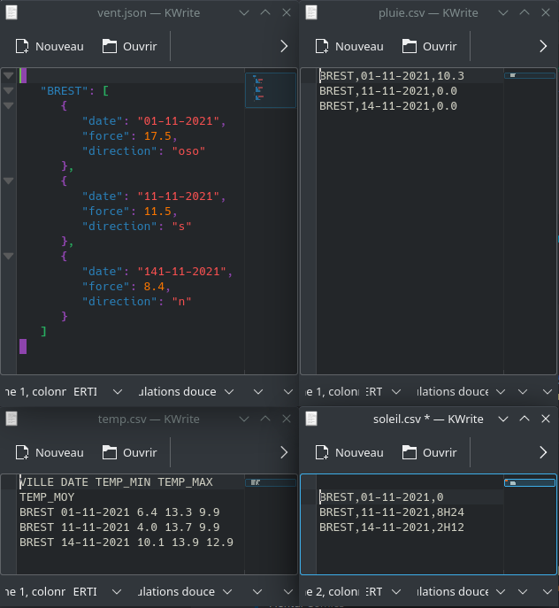

Ce projet consiste à récupérer le contenu de fichiers de données météorologiques puis de les synthétiser sous forme de graphiques.

Tout le projet se base sur la plateforme de conteneurisation : Docker. Celle-ci ne fonctionne que dans un environnement Linux. Les conteneurs créés par Docker peuvent s'apparenter à des petites machines virtuelles mais en réalité il ne s'agit pas d'émulation d'ordinateur mais de virtualisation. Cette spécificité vient avec son lot de propriétés l'une d'entre elles est le fait que les conteneurs n'ont pas système d'exploitation puisqu'ils se servent de celui de leur ordinateur hôte.

Par groupe de 3 et dans le cadre d'un projet du 2ème semestre du BUT nous avons donc développé un ensemble de script en PHP et en Bash. Pour travailler en équipe nous nous sommes servi de git et d'un dépôt stocké sur le serveur gitLab de l'IUT. De manière générale, les script Bashs servent à interagir avec les conteneurs de Docker et les scripts PHP avec les fichiers de données. Plus précisément le rôle des scripts PHP est de rassembler les données des différents fichiers puis de les transmettre au programme qui tourne dans le conteneur : gnuplot. Ce programme se charge ensuite de transformer les données en graphiques qui sont extraits du conteneur pour être donnés à l'utilisateur sous forme de pages html.
Voici le lien de téléchargement du projet : Le projet (zip)